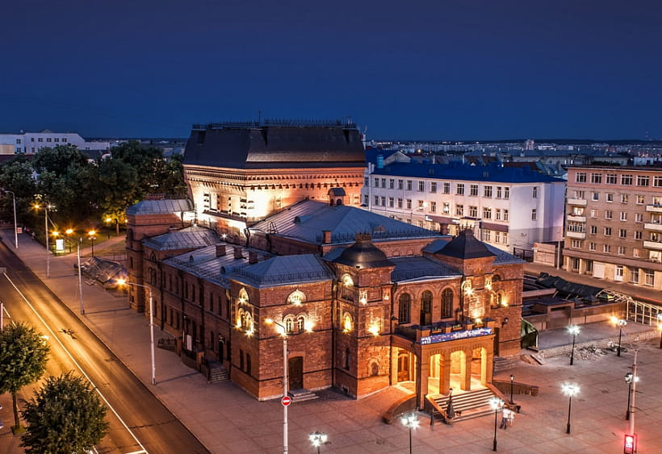
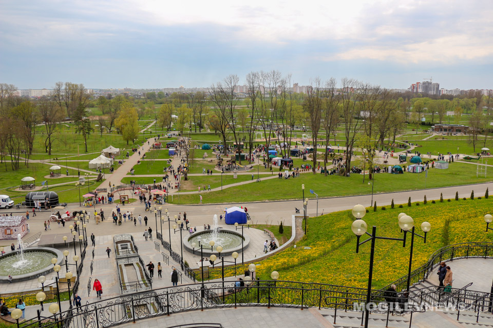

- near_me
- my_location
- place
- info
- help
- computer
- chat
- star_half
Построение Маршрута
Геолокация
Места рядом
Информация
Руководство
Блог
Ответы на вопросы
Отзывы
ИНФОРМАЦИЯ О ДОСТОПРИМЕЧАТЕЛЬНОСТЯХ
БЫСТРАЯ НАВИГАЦИЯ
МОГИЛЁВ
Городская ратуша
Музей В.К. Бялыницкого-Бирули
Могилёвский областной Краеведческий музей
Музей этнографии
Могилёвский областной драматический театр
Городской парк культуры и отдыха Подниколье
Свя́то-Нико́льский женский монастырь
Площадь звёзд
Костёл святого Станислава
Художественный музей имени П.В. Масленикова
Дворец культуры области
Площадь славы
Буйническое поле
Луполовский лагерь смерти
Полыковическая крыница
Польское кладбище
Печерский лесопарк
Мемориал детям войны
Мемориальный комплекс "Землянка"
Усадьба Толстых
Костёл Святого Антония
Спасо-преображенский собор
Театр кукол
Памятник батальону милиции
ГОРОДСКАЯ РАТУША
 Ратуша в Могилёве — одна из нескольких городских ратуш Беларуси, находится в г. Могилёве.
В 1578, через год после получения городом грамоты на магдебургское право, в Могилёве началось возведение городской ратуши. Первоначально ратуша была деревянной, поэтому неоднократно сгорала дотла, и её местонахождение менялось.
4 сентября 1679 года горожане приступили к строительству каменной ратуши, основной корпус которой был возведен к 1681 году, а полностью строительство завершили в 1698 году. Здание покрыли черепицей, соорудили 2 крыльца (большое и малое), над которыми размещались позолоченные флюгера (ветреницы). Высота 8-гранной 5-ярусной башни со шпилем равнялась 46 метрам.
Во время Северной войны в сентябре 1708 года ратуша сгорела, но была быстро восстановлена. А в 1733 году в ней проведён большой ремонт.
Здание было самым высоким в городе. В 1780 году с её смотровой площадки Могилёвом любовались императрица Екатерина II и австрийский император Иосиф II.
Во время Великой Отечественной войны ратуша была сильно повреждена. 28 декабря 1952 года на совещании архитекторов БССР по охране памятников архитектуры, было принято решение о её восстановлении, 11 сентября 1953 года — решение Исполкома Могилёвского городского Совета депутатов № 725, согласно которому здание ратуши объявлялось памятником архитектуры, а работы по её реставрации должны были быть завершены к 10 декабря 1953 года. Однако реставрация ратуши так и не была начата, а в июле 1957 года она была взорвана.
Неоднократно поднимались разговоры о восстановлении городской ратуши, но лишь 23 мая 1992 года произошла символическая закладка 1-го камня на старом месте будущей ратуши и его освящение на торжественном молебне. Реально к проекту и строительству приступили лишь в 2007 году. В 2008 году в день города произошло её торжественное открытие.
Ратуша в Могилёве — одна из нескольких городских ратуш Беларуси, находится в г. Могилёве.
В 1578, через год после получения городом грамоты на магдебургское право, в Могилёве началось возведение городской ратуши. Первоначально ратуша была деревянной, поэтому неоднократно сгорала дотла, и её местонахождение менялось.
4 сентября 1679 года горожане приступили к строительству каменной ратуши, основной корпус которой был возведен к 1681 году, а полностью строительство завершили в 1698 году. Здание покрыли черепицей, соорудили 2 крыльца (большое и малое), над которыми размещались позолоченные флюгера (ветреницы). Высота 8-гранной 5-ярусной башни со шпилем равнялась 46 метрам.
Во время Северной войны в сентябре 1708 года ратуша сгорела, но была быстро восстановлена. А в 1733 году в ней проведён большой ремонт.
Здание было самым высоким в городе. В 1780 году с её смотровой площадки Могилёвом любовались императрица Екатерина II и австрийский император Иосиф II.
Во время Великой Отечественной войны ратуша была сильно повреждена. 28 декабря 1952 года на совещании архитекторов БССР по охране памятников архитектуры, было принято решение о её восстановлении, 11 сентября 1953 года — решение Исполкома Могилёвского городского Совета депутатов № 725, согласно которому здание ратуши объявлялось памятником архитектуры, а работы по её реставрации должны были быть завершены к 10 декабря 1953 года. Однако реставрация ратуши так и не была начата, а в июле 1957 года она была взорвана.
Неоднократно поднимались разговоры о восстановлении городской ратуши, но лишь 23 мая 1992 года произошла символическая закладка 1-го камня на старом месте будущей ратуши и его освящение на торжественном молебне. Реально к проекту и строительству приступили лишь в 2007 году. В 2008 году в день города произошло её торжественное открытие.
МУЗЕЙ В. К. БЯЛЫНИЦКОГО-БИРУЛИ
 Художник родился в 1872 году в деревне Крынки близ Белыничей Могилёвской губернии. Его родной дом не сохранился. Музей художника был открыт в памятнике гражданской архитектуры XVII века — каменном двухэтажном особняке с мансардой на улице Ленинской, 37 в Могилёве. В мае 1780 года этот дом, как самый лучший из существовавших тогда в городе двухэтажных каменных домов, был предоставлен для проживания австрийскому императору Иосифу II для проведения встречи с Екатериной II. С 1815 по 1917 годы в этом доме размещалось Могилёвское дворянское депутатское собрание. В 1918 году помещение было передано только что созданной центральной городской библиотеке имени Карла Маркса.
Здание было частично разрушено в годы Великой Отечественной войны. В 1970-х годах его реконструировали: надстроили 3-й этаж и крышу. В плане получилось прямоугольное здание со сводчатым массивным перекрытием. Центр внутренней планировки — деревянная лестница, вокруг которой на втором этаже сгруппированы бывшие жилые помещения. Стены прорезаны прямоугольными оконными проёмами и декорированы профилированными лопатками. В центре главного фасада при реконструкции сделан лучковый входной проём и небольшой балкон с металлической ажурной оградой. Первый этаж и большой подвал под ним имеют сводчатое перекрытие, второй — балочное. Дом является архитектурным памятником в стиле барокко.
С 1982 года в здании находится филиал Национального художественного музея Беларуси художественный музей Бялыницкого-Бирули В. К.
Ко времени открытия могилёвского филиала Национальный художественный музей Республики Беларусь насчитывал в своих фондах почти пятьсот полотен народного художника БССР и РСФСР Бялыницкого-Бирули В. К., с большой старательностью и любовью собранных директором Государственной картинной галереи, заслуженным деятелем искусств БССР Еленой Васильевной Аладовой, которая, как выяснилось исследователями генеалогии, приходилась художнику кузиной.
Коллекция произведений Бялыницкого-Бирули В. К. — самое большое по своему объёму и художественной ценности собрание работ художника. Елена Алексеевна Бялыницкая-Бируля, вдова художника, передала в дар могилёвскому музею большую часть документов, фото и личных вещей с дачи «Чайка», дома-мастерской художника на берегу озера Удомля: этюдник, палитру, кисти; антикварную мебель, сделанную в Абрамцевской мастерской; охотничье ружьё — свидетельство особого пристрастия к охоте и уникальные письма Репина И. Е., в одном из которых великий русский живописец писал о своём восхищении работами молодого пейзажиста.
Данные материалы позволили создать большую мемориальную часть Музея, которая размещена на первом этаже особняка.
Большой объём информации дают фотографии родных художника, его семьи. Художник запечатлён в разные годы жизни — в детстве, учеником Киевского кадетского корпуса, за работой у мольберта, в кругу друзей, с дочкой Любочкой, со знаменитыми русскими художниками на праздновании 40-летия Товарищества Передвижников, с группой белорусских художников в Минске, с известными представителями советского искусства в залах Музея Академии художеств в Ленинграде.
Художник родился в 1872 году в деревне Крынки близ Белыничей Могилёвской губернии. Его родной дом не сохранился. Музей художника был открыт в памятнике гражданской архитектуры XVII века — каменном двухэтажном особняке с мансардой на улице Ленинской, 37 в Могилёве. В мае 1780 года этот дом, как самый лучший из существовавших тогда в городе двухэтажных каменных домов, был предоставлен для проживания австрийскому императору Иосифу II для проведения встречи с Екатериной II. С 1815 по 1917 годы в этом доме размещалось Могилёвское дворянское депутатское собрание. В 1918 году помещение было передано только что созданной центральной городской библиотеке имени Карла Маркса.
Здание было частично разрушено в годы Великой Отечественной войны. В 1970-х годах его реконструировали: надстроили 3-й этаж и крышу. В плане получилось прямоугольное здание со сводчатым массивным перекрытием. Центр внутренней планировки — деревянная лестница, вокруг которой на втором этаже сгруппированы бывшие жилые помещения. Стены прорезаны прямоугольными оконными проёмами и декорированы профилированными лопатками. В центре главного фасада при реконструкции сделан лучковый входной проём и небольшой балкон с металлической ажурной оградой. Первый этаж и большой подвал под ним имеют сводчатое перекрытие, второй — балочное. Дом является архитектурным памятником в стиле барокко.
С 1982 года в здании находится филиал Национального художественного музея Беларуси художественный музей Бялыницкого-Бирули В. К.
Ко времени открытия могилёвского филиала Национальный художественный музей Республики Беларусь насчитывал в своих фондах почти пятьсот полотен народного художника БССР и РСФСР Бялыницкого-Бирули В. К., с большой старательностью и любовью собранных директором Государственной картинной галереи, заслуженным деятелем искусств БССР Еленой Васильевной Аладовой, которая, как выяснилось исследователями генеалогии, приходилась художнику кузиной.
Коллекция произведений Бялыницкого-Бирули В. К. — самое большое по своему объёму и художественной ценности собрание работ художника. Елена Алексеевна Бялыницкая-Бируля, вдова художника, передала в дар могилёвскому музею большую часть документов, фото и личных вещей с дачи «Чайка», дома-мастерской художника на берегу озера Удомля: этюдник, палитру, кисти; антикварную мебель, сделанную в Абрамцевской мастерской; охотничье ружьё — свидетельство особого пристрастия к охоте и уникальные письма Репина И. Е., в одном из которых великий русский живописец писал о своём восхищении работами молодого пейзажиста.
Данные материалы позволили создать большую мемориальную часть Музея, которая размещена на первом этаже особняка.
Большой объём информации дают фотографии родных художника, его семьи. Художник запечатлён в разные годы жизни — в детстве, учеником Киевского кадетского корпуса, за работой у мольберта, в кругу друзей, с дочкой Любочкой, со знаменитыми русскими художниками на праздновании 40-летия Товарищества Передвижников, с группой белорусских художников в Минске, с известными представителями советского искусства в залах Музея Академии художеств в Ленинграде.
МОГИЛЁВСКИЙ ОБЛАСТНОЙ КРАЕВЕДЧЕСКИЙ МУЗЕЙ
 Первый музей в городе Могилёв был открыт 15 ноября 1867 года при губернском статистическом комитете и получил название Могилёвский музей.
18 декабря 1904 года в Могилёве открылся второй музей — церковно-археологический. В 1918 году музеи объединились в один — Губернский музей.
С 1919 года музей занимает здание бывшего земельного банка по адресу улица Миронова, 33. Ныне в этом здании расположен Могилёвский областной художественный музей.
С 1924 года музей являлся отделением минского Белорусского государственного музея. С 1929 года изменил название на Могилёвский государственный музей с двумя филиалами — Музеем истории и атеизма и Мемориальный музеем Г. К. Орджоникидзе.
В 1928—1929 годах музею передали некоторые экспонаты из государственного антикварного фонда СССР: изделия из драгметаллов и камней, иконы, картины, книги и т. д. В том числе была передана серебряная булава польского короля Сигизмунда III. Наиболее ценным предметом коллекции и уникальным экспонатом стал переданный в музей крест Ефросиньи Полоцкой — национальная реликвия белорусов. Крест и другие ценности были сразу же помещены в бронированную комнату-сейф, имевшуюся в здании.
В 1933 году помещения музея занял областной комитет ВКП(б) и музей и его коллекции был перемещены в помещения по адресу улица Ленинская, 60. Наиболее ценные экспонаты продолжали храниться в комнате-сейфе по старому адресу, так как на новом месте не оказалось подходящей комнаты.
В начале Великой Отечественной войны во время обороны Могилёва музей на улице Ленинской и филиал на улице Виленской сгорели вместе с экспонатами. По некоторым данным здания были сожжены местными властями во исполнение указаний И. В. Сталина из Обращения 3 июля 1941 года об уничтожении ценностей, которые не удается вывезти. За время войны были утеряны и экспонаты из комнаты-сейфа в здании областного комитета ВКП(б), которое уцелело. В итоге музей лишился всех своих коллекций.
После войны музей открылся только в 1949 году в качестве историко-краеведческого. Поскольку своих коллекций у музея не сохранилось, то некоторые экспонаты выделили музеи Ленинграда и Москвы.
Первый музей в городе Могилёв был открыт 15 ноября 1867 года при губернском статистическом комитете и получил название Могилёвский музей.
18 декабря 1904 года в Могилёве открылся второй музей — церковно-археологический. В 1918 году музеи объединились в один — Губернский музей.
С 1919 года музей занимает здание бывшего земельного банка по адресу улица Миронова, 33. Ныне в этом здании расположен Могилёвский областной художественный музей.
С 1924 года музей являлся отделением минского Белорусского государственного музея. С 1929 года изменил название на Могилёвский государственный музей с двумя филиалами — Музеем истории и атеизма и Мемориальный музеем Г. К. Орджоникидзе.
В 1928—1929 годах музею передали некоторые экспонаты из государственного антикварного фонда СССР: изделия из драгметаллов и камней, иконы, картины, книги и т. д. В том числе была передана серебряная булава польского короля Сигизмунда III. Наиболее ценным предметом коллекции и уникальным экспонатом стал переданный в музей крест Ефросиньи Полоцкой — национальная реликвия белорусов. Крест и другие ценности были сразу же помещены в бронированную комнату-сейф, имевшуюся в здании.
В 1933 году помещения музея занял областной комитет ВКП(б) и музей и его коллекции был перемещены в помещения по адресу улица Ленинская, 60. Наиболее ценные экспонаты продолжали храниться в комнате-сейфе по старому адресу, так как на новом месте не оказалось подходящей комнаты.
В начале Великой Отечественной войны во время обороны Могилёва музей на улице Ленинской и филиал на улице Виленской сгорели вместе с экспонатами. По некоторым данным здания были сожжены местными властями во исполнение указаний И. В. Сталина из Обращения 3 июля 1941 года об уничтожении ценностей, которые не удается вывезти. За время войны были утеряны и экспонаты из комнаты-сейфа в здании областного комитета ВКП(б), которое уцелело. В итоге музей лишился всех своих коллекций.
После войны музей открылся только в 1949 году в качестве историко-краеведческого. Поскольку своих коллекций у музея не сохранилось, то некоторые экспонаты выделили музеи Ленинграда и Москвы.
МУЗЕЙ ЭТНОГРАФИИ
 Музей этнографии в Могилёве является филиалом Могилёвского областного историко-краеведческого музея. Располагается по адресу ул. Первомайская № 8. Открыт в 1981 году.
Площадь экспозиции 760 м², 4,5 тыс. предметов основного фонда (2000). Материалы музея знакомят с состоянием материальной и духовной культуры крестьян Могилевского Поднепровья городского быта могилевчан конца XIX — начала XX веков. Среди экспонатов — орудия труда, предметы быта, национальная одежда могилевских и краснопольских костюмов, коллекция подлинных могилёвских полотенец, иконы, изразцы и деревянная скульптура XVII — XIX веков, церковные книги, журналы XIX — начала XX веков.
Здание музея стоит на фундаменте Могилёвского иезуитского коллегиума. Внутренняя стена, которая выходит во двор музея, является аутентичной стеной XVIII века, бывшей частью коллегиума.
Музей этнографии в Могилёве является филиалом Могилёвского областного историко-краеведческого музея. Располагается по адресу ул. Первомайская № 8. Открыт в 1981 году.
Площадь экспозиции 760 м², 4,5 тыс. предметов основного фонда (2000). Материалы музея знакомят с состоянием материальной и духовной культуры крестьян Могилевского Поднепровья городского быта могилевчан конца XIX — начала XX веков. Среди экспонатов — орудия труда, предметы быта, национальная одежда могилевских и краснопольских костюмов, коллекция подлинных могилёвских полотенец, иконы, изразцы и деревянная скульптура XVII — XIX веков, церковные книги, журналы XIX — начала XX веков.
Здание музея стоит на фундаменте Могилёвского иезуитского коллегиума. Внутренняя стена, которая выходит во двор музея, является аутентичной стеной XVIII века, бывшей частью коллегиума.
МОГИЛЕВСКИЙ ОБЛАСТНОЙ ДРАМАТИЧЕСКИЙ ТЕАТР
 Он был построен еще в 1888 году на добровольные пожертвования горожан. До 1928 года в Могилевском драмтеатре не было постоянной труппы. С 1928 года основатель первого стабильного театра в Могилеве актер и режиссер В. Кумельский создал в Могилеве русскую передвижную труппу (всего 28 человек), состав которой был укомплектован на московской актерской бирже. В 1931 году коллектив стал именоваться Первым русским театром БССР, а в 1932 году - Государственным русским театром БССР. Война застала театр на гастролях в г. Белостоке, и театр был вынужден прервать работу. И в 1944 году театр возвратился в освобожденный Могилев. Затем, с апреля 1945 до июня 1947 театр работал в Гродно, а с июля 1947 Государственный русский драматический театр БССР был переведен в столицу Беларуси (ныне - Национальный академический драматический театр им. М. Горького). До 1953 года здание театра в Могилеве оставалось без постоянного хозяина. В 1954 году Пинский областной драматический театр был переведен в Могилев и стал именоваться Могилевским областным драматическим театром.
ГОРОДСКОЙ ПАРК КУЛЬТУРЫ И ОТДЫХА ПОДНИКОЛЬЕ
 Покровский посад (Подниколье) ежегодно подвергался затоплению во время весенних разливов Днепра. Скромные огороды, покрытые летом сочной зеленью, грядками с огурцами, луком, капустой, весной представляли собой нечто вроде венецианских каналов. Ежегодно затапливалось до 100 домов со всеми надворными постройками. Но вреда от этого не было никакого. Зная о постоянстве стихии, местные жители отнюдь на нее не сетовали. Потому как осадок ила, остающийся на огородах после очередного разлива, делал землю более плодородной. Хотя предпринимались определенные меры предосторожности. Дома строились на довольно высоких столбах. Каждый хозяин имел небольшую лодку, постоянно «припаркованную» у дверей. Во время разливов обитатели посада своих владений не покидали. Если вода во время паводка покрывала пол, доставали с чердаков запасные лаги и доски и устраивали второй, временный, пол, находящийся выше постоянного. Зачастую дети, играя, проваливались сквозь раздвинувшиеся доски и падали в воду. Но такие холодные ванны оставались для них, как правило, безвредными. Вместе с людьми в затопленных домах оставался и скот, ютившийся на узких подмостках. Собаки забирались на крыши домов, куры и индейки — на чердаки. А вот уткам и гусям было раздольно. Соседи ходили друг к другу в гости, перебираясь по крышам и чердакам построек да по заборам...
МОГИЛЁВСКИЙ СВЯТО-НИКОЛЬСКИЙ ЖЕНСКИЙ МОНАСТЫРЬ
 Свя́то-Нико́льский монасты́рь — православный женский монастырь Белорусского экзархата Русской православной церкви в городе Могилёве. На территории монастыря находятся Свято-Никольский собор и храм преподобного Онуфрия Великого.
Сооружение монастыря началось в XVII веке, когда киевский митрополит Пётр (Могила), получил согласие великого князя литовского и короля польского Владислава IV на сооружение в Могилёве церкви Святого Николая. Во время правления могилевской епархией епископом Сильвестром (Коссовым) в 1637 была построена временная деревянная Никольская церковь. Строительство неотапливаемого кирпичного храма началось в 1669 году, а в 1672 он был освящен епископом Феодосием I (Василевичем).
В начале XVIII века монастырь был подвергнут нападению шведов, а позже русских войск, татарских и калмыцких полков. Свято-Никольский монастырь был подожжен и значительно пострадал в ходе пожара. В 1719 последние инокини монастыря переселились в Барколабовский монастырь. В это же время начал действовать мужской монастырь, который просуществовал до 1754 года. С 1754 года до 30-х годов XX века монастырь действовал как приход.
В 1793 году при архиепископе Георгии (Конисском) было начато строительство зимнего отапливаемого храма рядом с Никольским собором, который в 1798 был освящен архиепископом Анастасием (Романенко-Братановским), сейчас это Онуфриевский храм.
С августа 1915 по ноябрь 1917 в Могилёве находилась Ставка Верховного Главнокомандующего и император Николай II со своей большой семьёй во время нахождения в ставке посещал Свято-Никольский собор.
Не избежал гонений на церковь в годы советской власти Могилёв. Церковная утварь храмов монастыря была изъята и использовалась не по назначению, иконостас разрушен. А в 1934 году со смертью священника Михаила Плещинского Свято-Никольский собор был закрыт. В 1937 году прекратила существование и Могилёвская епархия (возрождена в 1989 году).
С 1937 года в Свято-Никольском соборе находилась пересыльная тюрьма. В 1941 году тюрьма была закрыта. С 1946 в соборе располагалась книжная база. В 1991 году во время работ по возрождению монастыря были обнаружены многочисленные человеческие останки. Вероятнее всего это жертвы сталинских репрессий, так как в конце 30-х годов на территории храма находилась тюрьма.
Свя́то-Нико́льский монасты́рь — православный женский монастырь Белорусского экзархата Русской православной церкви в городе Могилёве. На территории монастыря находятся Свято-Никольский собор и храм преподобного Онуфрия Великого.
Сооружение монастыря началось в XVII веке, когда киевский митрополит Пётр (Могила), получил согласие великого князя литовского и короля польского Владислава IV на сооружение в Могилёве церкви Святого Николая. Во время правления могилевской епархией епископом Сильвестром (Коссовым) в 1637 была построена временная деревянная Никольская церковь. Строительство неотапливаемого кирпичного храма началось в 1669 году, а в 1672 он был освящен епископом Феодосием I (Василевичем).
В начале XVIII века монастырь был подвергнут нападению шведов, а позже русских войск, татарских и калмыцких полков. Свято-Никольский монастырь был подожжен и значительно пострадал в ходе пожара. В 1719 последние инокини монастыря переселились в Барколабовский монастырь. В это же время начал действовать мужской монастырь, который просуществовал до 1754 года. С 1754 года до 30-х годов XX века монастырь действовал как приход.
В 1793 году при архиепископе Георгии (Конисском) было начато строительство зимнего отапливаемого храма рядом с Никольским собором, который в 1798 был освящен архиепископом Анастасием (Романенко-Братановским), сейчас это Онуфриевский храм.
С августа 1915 по ноябрь 1917 в Могилёве находилась Ставка Верховного Главнокомандующего и император Николай II со своей большой семьёй во время нахождения в ставке посещал Свято-Никольский собор.
Не избежал гонений на церковь в годы советской власти Могилёв. Церковная утварь храмов монастыря была изъята и использовалась не по назначению, иконостас разрушен. А в 1934 году со смертью священника Михаила Плещинского Свято-Никольский собор был закрыт. В 1937 году прекратила существование и Могилёвская епархия (возрождена в 1989 году).
С 1937 года в Свято-Никольском соборе находилась пересыльная тюрьма. В 1941 году тюрьма была закрыта. С 1946 в соборе располагалась книжная база. В 1991 году во время работ по возрождению монастыря были обнаружены многочисленные человеческие останки. Вероятнее всего это жертвы сталинских репрессий, так как в конце 30-х годов на территории храма находилась тюрьма.
ПЛОЩАДЬ ЗВЁЗД
 Памятник Звездочёту — скульптурный ансамбль в городе Могилёве, Беларусь, состоящий из звездочёта, телескопа — гномона солнечных часов и 12-ти стульев, символизирующих циферблат. Единственный памятник звездочёту и астроному в мире.
Скульптурная композиция создана в 2003 году.
Автор композиции — скульптор Владимир Иванович Жбанов (1954—2012).
Площадь Звёзд, на которой установлена скульптурная композиция, создана в современном виде по инициативе городских властей в 2003 году как культурно-исторических центр города. Она является своеобразной аллеей славы. На вмонтированных в тротуарную плитку 2-метровых каменных плитах с изображением пятиконечной звезды, вписанной в круг, увековечены имена известных могилевчан, оставивших свой вклад в истории спорта, музыки и науки. На сегодняшний день на площади установлено 13 звезд. Каждый год в Могилёве «зажигают» 1-2 новые звезды.
До 2003 года могилёвскую площадь Звёзд украшали обычные солнечные часы в виде наклонной трубы, проходящей через центр циферблата. Городские власти думали над тем, что сделать изюминкой города, и решили воплотить на площади оригинальную и необычную скульптуру. Для осуществления замысла было принято решение пригласить Владимира Ивановича Жбанова, известного скульптора из Минска, автора человеческих образов в камне, расположенных по всей Беларуси. В Могилёве можно увидеть такие работы В. И. Жбанова, как «Девочка с зонтиком», «Прикуривающий», «Дама с собачкой».
Памятник Звездочёту — скульптурный ансамбль в городе Могилёве, Беларусь, состоящий из звездочёта, телескопа — гномона солнечных часов и 12-ти стульев, символизирующих циферблат. Единственный памятник звездочёту и астроному в мире.
Скульптурная композиция создана в 2003 году.
Автор композиции — скульптор Владимир Иванович Жбанов (1954—2012).
Площадь Звёзд, на которой установлена скульптурная композиция, создана в современном виде по инициативе городских властей в 2003 году как культурно-исторических центр города. Она является своеобразной аллеей славы. На вмонтированных в тротуарную плитку 2-метровых каменных плитах с изображением пятиконечной звезды, вписанной в круг, увековечены имена известных могилевчан, оставивших свой вклад в истории спорта, музыки и науки. На сегодняшний день на площади установлено 13 звезд. Каждый год в Могилёве «зажигают» 1-2 новые звезды.
До 2003 года могилёвскую площадь Звёзд украшали обычные солнечные часы в виде наклонной трубы, проходящей через центр циферблата. Городские власти думали над тем, что сделать изюминкой города, и решили воплотить на площади оригинальную и необычную скульптуру. Для осуществления замысла было принято решение пригласить Владимира Ивановича Жбанова, известного скульптора из Минска, автора человеческих образов в камне, расположенных по всей Беларуси. В Могилёве можно увидеть такие работы В. И. Жбанова, как «Девочка с зонтиком», «Прикуривающий», «Дама с собачкой».
КОСТЁЛ СВЯТОГО СТАНИСЛАВА
 Собор Успения Девы Марии, Собор Успения Девы Марии и Святого Станислава — католический собор в Могилёве, Белоруссия. Носит статус сокафедрального собора Минско-Могилёвского архидиоцеза. Памятник архитектуры в стиле барокко, построен в 1738—1752 годах. В интерьере выделяются фрески на библейские темы на сводах храма.
Собор стоит на месте бывшего монастыря кармелитов. В 1636 году на территории монастыря была построена деревянная церковь, освящённая во имя Успения Пресвятой Девы Марии. В 1708 году во время большого пожара эта церковь сгорела, а на её месте в 1738—1752 годах велось строительство каменного храма. Новый храм кармелитского монастыря был освящён в 1765 г. виленским епископом Ф. Зенковичем.
25 декабря 1772 года Екатерина II объявила о создании в Российской империи католической Белорусской епархии с центром в Могилёве. Десятью годами позже Белорусская епархия была преобразована в Могилёвскую архиепархию, которой подчинялись все католические приходы латинского обряда в России (в том числе в Москве и Санкт-Петербурге). С 1783 года храм кармелитского монастыря стал кафедральным собором могилёвской архиепархии. Поскольку покровителем собора считался святой Станислав собор называли как собором Успения, так и собором святого Станислава. В сведениях о Могилевском кафедральном соборе в 1911 году указано: «Покровитель костела Св. Станислав Римский; название костела Успение Пресвятой Богородицы…»
В конце XVIII столетия собор был перестроен, в частности, к фасаду был пристроен 4-колонный портик. Роспись на сводах выполнена во второй половине XVIII века группой могилевских художников под руководством Павла Пиотровского.
В 1956 году собор был закрыт, в нём разместился Центральный исторический архив БССР. В 1960 году он был переведен в Минск, а в здание бывшего собора переехал Государственный архив Могилевской области. В этот период храм утратил часть росписей, был безвозвратно утерян орган с редкими керамическими трубами.
В начале 1990-х годов здание собора возвращено верующим, реставрация шла вплоть до 1994 года. Собор получил статус сокафедрального в образованной в 1991 году Минско-Могилёвской архиепархии. С 1993 года собор Успения служит одним из центром ежегодного фестиваля духовной музыки «Магутны Божа», проводимого в Могилёве.
Собор Успения Девы Марии, Собор Успения Девы Марии и Святого Станислава — католический собор в Могилёве, Белоруссия. Носит статус сокафедрального собора Минско-Могилёвского архидиоцеза. Памятник архитектуры в стиле барокко, построен в 1738—1752 годах. В интерьере выделяются фрески на библейские темы на сводах храма.
Собор стоит на месте бывшего монастыря кармелитов. В 1636 году на территории монастыря была построена деревянная церковь, освящённая во имя Успения Пресвятой Девы Марии. В 1708 году во время большого пожара эта церковь сгорела, а на её месте в 1738—1752 годах велось строительство каменного храма. Новый храм кармелитского монастыря был освящён в 1765 г. виленским епископом Ф. Зенковичем.
25 декабря 1772 года Екатерина II объявила о создании в Российской империи католической Белорусской епархии с центром в Могилёве. Десятью годами позже Белорусская епархия была преобразована в Могилёвскую архиепархию, которой подчинялись все католические приходы латинского обряда в России (в том числе в Москве и Санкт-Петербурге). С 1783 года храм кармелитского монастыря стал кафедральным собором могилёвской архиепархии. Поскольку покровителем собора считался святой Станислав собор называли как собором Успения, так и собором святого Станислава. В сведениях о Могилевском кафедральном соборе в 1911 году указано: «Покровитель костела Св. Станислав Римский; название костела Успение Пресвятой Богородицы…»
В конце XVIII столетия собор был перестроен, в частности, к фасаду был пристроен 4-колонный портик. Роспись на сводах выполнена во второй половине XVIII века группой могилевских художников под руководством Павла Пиотровского.
В 1956 году собор был закрыт, в нём разместился Центральный исторический архив БССР. В 1960 году он был переведен в Минск, а в здание бывшего собора переехал Государственный архив Могилевской области. В этот период храм утратил часть росписей, был безвозвратно утерян орган с редкими керамическими трубами.
В начале 1990-х годов здание собора возвращено верующим, реставрация шла вплоть до 1994 года. Собор получил статус сокафедрального в образованной в 1991 году Минско-Могилёвской архиепархии. С 1993 года собор Успения служит одним из центром ежегодного фестиваля духовной музыки «Магутны Божа», проводимого в Могилёве.
ХУДОЖЕСТВЕННЫЙ МУЗЕЙ ИМЕНИ П.В. МАСЛЕНИКОВА
 Могилёвский областной художественный музей имени П. В. Масленикова — учреждён в соответствии с Законом Республики Беларусь «О музеях и музейных фондах Республики Беларусь», открыт решением исполнительного комитета Могилёвского областного Совета депутатов № 13 от 19 ноября 1990 года.
Указом Президента Республики Беларусь от 22 января 1996 года Могилёвскому областному музею было присвоено имя П. В. Масленикова. Музей располагается в здании, которое является памятником архитектуры начала XX века. Здание возвели в 1903—1914 годах с чертами модерна, русского стиля и позднего классицизма.
Двухэтажное Т-образное в плане здание было самым красивым в городе и имело своё водяное отопление, электрическое освещение, телефон. Здание выглядит очень оригинально не только из-за декоративных элементов и росписи, но и за счёт башни и куполов, каждый из которых имеет собственную форму. На первом этаже, имелись помещения с бронированными дверями, где хранились денежные средства банков.
Могилёвский областной художественный музей имени П. В. Масленикова — учреждён в соответствии с Законом Республики Беларусь «О музеях и музейных фондах Республики Беларусь», открыт решением исполнительного комитета Могилёвского областного Совета депутатов № 13 от 19 ноября 1990 года.
Указом Президента Республики Беларусь от 22 января 1996 года Могилёвскому областному музею было присвоено имя П. В. Масленикова. Музей располагается в здании, которое является памятником архитектуры начала XX века. Здание возвели в 1903—1914 годах с чертами модерна, русского стиля и позднего классицизма.
Двухэтажное Т-образное в плане здание было самым красивым в городе и имело своё водяное отопление, электрическое освещение, телефон. Здание выглядит очень оригинально не только из-за декоративных элементов и росписи, но и за счёт башни и куполов, каждый из которых имеет собственную форму. На первом этаже, имелись помещения с бронированными дверями, где хранились денежные средства банков.
ДВОРЕЦ КУЛЬТУРЫ ОБЛАСТИ
 Здание учреждения культуры было построено в 1977 году (архитекторы: Я. Смольговский, О. Ладыгина, В. Астапович) и входило в состав промышленного гиганта как подразделение Дворец культуры и техники Могилевского производственного объединения «Химволокно». В этом статусе учреждение функционировало 30 лет. В декабре 2007 года на базе Дворца культуры и техники ОАО «Могилевхимволокно» в ходе реорганизации образовано государственное учреждение культуры «Дворец культуры области».
В учреждении созданы все условия для проведения эстрадных концертов, оперных и балетных спектаклей, театрализованных праздников, представлений и пр.
Здание учреждения функционально разделено на части:
зрелищную (театрально-концертный зал с подсобными помещениями),
для отдыха (танцевальный зал, выставочный зал, кино-лекционный зал), клубную (помещения для кружковой работы, репетиционные залы, рабочие кабинеты).
Количество зрительных мест в театрально-концертном зале (партер, балкон) — 1058, в кино-лекционном зале — 198 посадочных мест.
Здание учреждения культуры было построено в 1977 году (архитекторы: Я. Смольговский, О. Ладыгина, В. Астапович) и входило в состав промышленного гиганта как подразделение Дворец культуры и техники Могилевского производственного объединения «Химволокно». В этом статусе учреждение функционировало 30 лет. В декабре 2007 года на базе Дворца культуры и техники ОАО «Могилевхимволокно» в ходе реорганизации образовано государственное учреждение культуры «Дворец культуры области».
В учреждении созданы все условия для проведения эстрадных концертов, оперных и балетных спектаклей, театрализованных праздников, представлений и пр.
Здание учреждения функционально разделено на части:
зрелищную (театрально-концертный зал с подсобными помещениями),
для отдыха (танцевальный зал, выставочный зал, кино-лекционный зал), клубную (помещения для кружковой работы, репетиционные залы, рабочие кабинеты).
Количество зрительных мест в театрально-концертном зале (партер, балкон) — 1058, в кино-лекционном зале — 198 посадочных мест.
ПЛОЩАДЬ СЛАВЫ
 Площадь возникла в 1-й половине XVI века на высоком холме у слияния рек Дубровенки и Днепра, между замком и Нагорский (Нагорным) посадом как Торговая площадь.
Имела форму неправильного многоугольника (в 1604 году занимала территорию площадью более 2 га). На ней располагались 26 рядов лавок. От площади радиально шли две главные улицы — Шкловская (ныне Первомайская улица) и Ветряная (ныне Ленинская улица), которые вместе с другими улицами и дорогами на Вильно, Быхов и Мстиславль формировали радиальную систему планировки города.
В 1578 году, через год после получения городом грамоты на магдебургское право, в Могилёве началось возведение городской ратуши.
После присоединения в 1772 году Могилёва к России Торговая площадь получила название Губернаторской. Новый её облик разрабатывали известные русские архитекторы Н. А. Львов и В. П. Стасов. Полукругом на ней располагались здание нижнего суда, врачебной управы и архива (в 1883 году по проекту архитектора Н. П. Высоцкого реконструировано под окружной суд), домов губернатора, вице-губернатора и губернского правления (не сохранились).
Часть площади, непосредственно примыкавшая к замку, оставалась незастроенной (в 1928—1932 годах на месте замка создан городской парк). Во второй половине XIX века рядом с ратушей было построено здание городской управы.
Площадь возникла в 1-й половине XVI века на высоком холме у слияния рек Дубровенки и Днепра, между замком и Нагорский (Нагорным) посадом как Торговая площадь.
Имела форму неправильного многоугольника (в 1604 году занимала территорию площадью более 2 га). На ней располагались 26 рядов лавок. От площади радиально шли две главные улицы — Шкловская (ныне Первомайская улица) и Ветряная (ныне Ленинская улица), которые вместе с другими улицами и дорогами на Вильно, Быхов и Мстиславль формировали радиальную систему планировки города.
В 1578 году, через год после получения городом грамоты на магдебургское право, в Могилёве началось возведение городской ратуши.
После присоединения в 1772 году Могилёва к России Торговая площадь получила название Губернаторской. Новый её облик разрабатывали известные русские архитекторы Н. А. Львов и В. П. Стасов. Полукругом на ней располагались здание нижнего суда, врачебной управы и архива (в 1883 году по проекту архитектора Н. П. Высоцкого реконструировано под окружной суд), домов губернатора, вице-губернатора и губернского правления (не сохранились).
Часть площади, непосредственно примыкавшая к замку, оставалась незастроенной (в 1928—1932 годах на месте замка создан городской парк). Во второй половине XIX века рядом с ратушей было построено здание городской управы.
БУЙНИЧЕСКОЕ ПОЛЕ
 Мемориальный комплекс «Буйничское поле» — историко-культурная ценность Беларуси с 2002 г. Автор проекта архитектор Владимир Чаленко. Мемориал включает в себя арку входа, которая соединена аллеей с центральной композицией — 27-метровой краснокирпичной часовней, построенной в стиле православной архитектуры.
Стены часовни внутри облицованы светлым мрамором. На них размещены мемориальные доски с сотнями фамилий воинов и народных ополченцев, погибших при обороне Могилева. В центре часовни — «маятник Фуко» Буйничского мемориала. Под часовней находится склеп, предназначенный для торжественного перезахоронения останков погибших воинов Красной Армии, обнаруженных на полях боев в окрестностях Могилева.
Аллеи соединяют часовню с аркой, где размещены горельефные доски, памятным камнем писателю К. Симонову, а также «озером слез». Вокруг расположены образцы боевого вооружения и техники периода войны. Справа от часовни хорошо видны остатки противотанкового рва.
Над Буйничским полем, согласно завещанию писателя, в сентябре 1979 года развеян прах К. Симонова.
Мемориальный комплекс «Буйничское поле» — историко-культурная ценность Беларуси с 2002 г. Автор проекта архитектор Владимир Чаленко. Мемориал включает в себя арку входа, которая соединена аллеей с центральной композицией — 27-метровой краснокирпичной часовней, построенной в стиле православной архитектуры.
Стены часовни внутри облицованы светлым мрамором. На них размещены мемориальные доски с сотнями фамилий воинов и народных ополченцев, погибших при обороне Могилева. В центре часовни — «маятник Фуко» Буйничского мемориала. Под часовней находится склеп, предназначенный для торжественного перезахоронения останков погибших воинов Красной Армии, обнаруженных на полях боев в окрестностях Могилева.
Аллеи соединяют часовню с аркой, где размещены горельефные доски, памятным камнем писателю К. Симонову, а также «озером слез». Вокруг расположены образцы боевого вооружения и техники периода войны. Справа от часовни хорошо видны остатки противотанкового рва.
Над Буйничским полем, согласно завещанию писателя, в сентябре 1979 года развеян прах К. Симонова.
ЛУПОЛОВСКИЙ ЛАГЕРЬ СМЕРТИ
 Луполовский лагерь военнопленных (шталаг № 341) был создан немецкими оккупантами в августе 1941 года на окраине Могилёва — в районе Луполово для содержания советских военнопленных.
Лагерь был обнесён колючей проволокой, по которой пропускался электрический ток. Узников содержали в антисанитарных условиях (свирепствовал тиф), пытали, морили голодом, расстреливали. За время существования лагеря до 1943 года в нем погибло более 40 тысяч человек, известны имена лишь 389 из них.
На территории бывшего лагеря смерти находится братская могила советских солдат. В ней похоронены 53 воина, погибшие в июне 1944 в боях против вермахта на подступах к Могилёву в районе Луполово. Среди них воины 238-й дивизии 121-го стрелкового корпуса 50-й армии и 369-й дивизии 62-го стрелкового корпуса 49-й армии 2-го Белорусского фронта.
В память об узниках лагеря и советских солдатах, погибших в боях в 1944 в районе Луполова, возведён мемориальный комплекс.
Среди известных узников лагеря — генерал Михаил Романов.
Луполовский лагерь военнопленных (шталаг № 341) был создан немецкими оккупантами в августе 1941 года на окраине Могилёва — в районе Луполово для содержания советских военнопленных.
Лагерь был обнесён колючей проволокой, по которой пропускался электрический ток. Узников содержали в антисанитарных условиях (свирепствовал тиф), пытали, морили голодом, расстреливали. За время существования лагеря до 1943 года в нем погибло более 40 тысяч человек, известны имена лишь 389 из них.
На территории бывшего лагеря смерти находится братская могила советских солдат. В ней похоронены 53 воина, погибшие в июне 1944 в боях против вермахта на подступах к Могилёву в районе Луполово. Среди них воины 238-й дивизии 121-го стрелкового корпуса 50-й армии и 369-й дивизии 62-го стрелкового корпуса 49-й армии 2-го Белорусского фронта.
В память об узниках лагеря и советских солдатах, погибших в боях в 1944 в районе Луполова, возведён мемориальный комплекс.
Среди известных узников лагеря — генерал Михаил Романов.
ПОЛЫКОВИЧЕСКАЯ КРЫНИЦА
 Полыковичская криница является известной в Беларуси достопримечательностью. Она находится в деревне Полыковичи, расположенной под Могилевом. Этот источник стал местом паломничества верующих со всех уголков страны. Считается, что если окунуться в целебную воду криницы, то многие болезни пройдут. Также помогает Святая водица женщинам, страдающим от бесплодия.
Целебные свойства источника подтверждены учеными Белорусского Института геофизики и геохимии еще в 1980-х годах. Оказалось, что его вода минерализована на 25% и содержит немало полезных микроэлементов. После проверки криница получила статус памятника республиканского значения.
Последние годы Полыковичская криница пользуется особой популярностью на Крещение. Чтобы окунуться в святую воду, люди приезжают сюда целыми семьями и организованными группами. На территории оборудована удобная купель. Также целебную воду набирают в бутылки для лечения заболеваний желудочно-кишечного тракта и других недугов.
Полыковичская криница является известной в Беларуси достопримечательностью. Она находится в деревне Полыковичи, расположенной под Могилевом. Этот источник стал местом паломничества верующих со всех уголков страны. Считается, что если окунуться в целебную воду криницы, то многие болезни пройдут. Также помогает Святая водица женщинам, страдающим от бесплодия.
Целебные свойства источника подтверждены учеными Белорусского Института геофизики и геохимии еще в 1980-х годах. Оказалось, что его вода минерализована на 25% и содержит немало полезных микроэлементов. После проверки криница получила статус памятника республиканского значения.
Последние годы Полыковичская криница пользуется особой популярностью на Крещение. Чтобы окунуться в святую воду, люди приезжают сюда целыми семьями и организованными группами. На территории оборудована удобная купель. Также целебную воду набирают в бутылки для лечения заболеваний желудочно-кишечного тракта и других недугов.
ПОЛЬСКОЕ КЛАДБИЩЕ
 Кладбище было основано на рубеже XVIII—XIX веков, самое старое сохранившееся захоронение датируется 1810 годом. По переписи 1997 года на кладбище насчитывается около 250 старых захоронений.
В 1904 году в центре кладбища была построена каменная усыпальница Сеножацких. Также в начале XX века на кладбище были возведены часовни в неоготическом и неоклассическом стиле, а также часовня-усыпальница Жуковских в неоегипетском стиле.
В 1950-х годах католики Могилёва летом собирались на кладбище на религиозные праздники, молились возле могил своих родственников, а потом вместе пели молитвы и псалмы. Вместо священника эти песнопения вела Юлия Дашкевич из Шкловского района.
Закрыто для захоронений в 1976 году.
Часовня-усыпальница Сеножацких была передана верующим и освящена 25 ноября 1989 года. Неоготическая часовня была преобразована в грекокатолическую церковь иконы Божией Матери Белыницкой.
Кладбище было основано на рубеже XVIII—XIX веков, самое старое сохранившееся захоронение датируется 1810 годом. По переписи 1997 года на кладбище насчитывается около 250 старых захоронений.
В 1904 году в центре кладбища была построена каменная усыпальница Сеножацких. Также в начале XX века на кладбище были возведены часовни в неоготическом и неоклассическом стиле, а также часовня-усыпальница Жуковских в неоегипетском стиле.
В 1950-х годах католики Могилёва летом собирались на кладбище на религиозные праздники, молились возле могил своих родственников, а потом вместе пели молитвы и псалмы. Вместо священника эти песнопения вела Юлия Дашкевич из Шкловского района.
Закрыто для захоронений в 1976 году.
Часовня-усыпальница Сеножацких была передана верующим и освящена 25 ноября 1989 года. Неоготическая часовня была преобразована в грекокатолическую церковь иконы Божией Матери Белыницкой.
ПЕЧЕРСКИЙ ЛЕСОПАРК
 Печерский лесопарк — лесной массив, расположенный в северо-западной части Могилёва в долине реки Дубровенка (приток Днепра), на которой искусственно создано Печерское озеро.
2 сентября 2021 года лесопарк был объявлен заказником местного значения "Печерский".
В лесопарке проводятся общегородские праздники, спортивные соревнования.
Первое упоминание про Печерск относится к 1632 г., когда головчинский князь Алексей Лахтынович завещал Киево-Печерскому монастырю своё имение, которое находилось возле дороги в Могилёв. В 1644 г., во время нахождения в Могилёве настоятеля Киево-Печерского монастыря, известного просветителя архимандрита Петра Могилы, имение Печерск отошло к владениям могилёвских православных епископов и стало их резиденцией. Впоследствии епископы владели только частью нынешней территории Печерского парка. На ней размещалась архиерейская дача, церковь Святого Георгия, мельница, корчма.
Печерский лесопарк — лесной массив, расположенный в северо-западной части Могилёва в долине реки Дубровенка (приток Днепра), на которой искусственно создано Печерское озеро.
2 сентября 2021 года лесопарк был объявлен заказником местного значения "Печерский".
В лесопарке проводятся общегородские праздники, спортивные соревнования.
Первое упоминание про Печерск относится к 1632 г., когда головчинский князь Алексей Лахтынович завещал Киево-Печерскому монастырю своё имение, которое находилось возле дороги в Могилёв. В 1644 г., во время нахождения в Могилёве настоятеля Киево-Печерского монастыря, известного просветителя архимандрита Петра Могилы, имение Печерск отошло к владениям могилёвских православных епископов и стало их резиденцией. Впоследствии епископы владели только частью нынешней территории Печерского парка. На ней размещалась архиерейская дача, церковь Святого Георгия, мельница, корчма.
МЕМОРИАЛ ДЕТЯМ ВОЙНЫ
 «Дети мира — детям войны» — мемориал детям военных лет в Могилёве, Беларусь.
Мемориал был открыт 3 июля 2009 года и тематически связан с расположенным рядом памятником воинам-освободителям, что делает их единым комплексом-ансамблем. Построен на пожертвования жителей Белоруссии. В торжественном мероприятии приняли участие руководство области и города, представители Администрации Президента Республики Беларусь, депутаты белорусского парламента, зарубежные делегации, ветераны войны, представители трудовых коллективов, общественности и молодёжи.
Авторами проекта являются минские архитектор — Игорь Морозов и скульптор — Владимир Слободчиков.
Перед памятником разбит цветник, по обеим сторонам мемориала находятся два гранитных шара с мемориальными надписями. В бо́льшем из них (диаметром порядка 1,5 м) замурована капсула с посланием потомкам.
«Дети мира — детям войны» — мемориал детям военных лет в Могилёве, Беларусь.
Мемориал был открыт 3 июля 2009 года и тематически связан с расположенным рядом памятником воинам-освободителям, что делает их единым комплексом-ансамблем. Построен на пожертвования жителей Белоруссии. В торжественном мероприятии приняли участие руководство области и города, представители Администрации Президента Республики Беларусь, депутаты белорусского парламента, зарубежные делегации, ветераны войны, представители трудовых коллективов, общественности и молодёжи.
Авторами проекта являются минские архитектор — Игорь Морозов и скульптор — Владимир Слободчиков.
Перед памятником разбит цветник, по обеим сторонам мемориала находятся два гранитных шара с мемориальными надписями. В бо́льшем из них (диаметром порядка 1,5 м) замурована капсула с посланием потомкам.
МЕМОРИАЛЬНЫЙ КОМПЛЕКС "ЗЕМЛЯНКА"
 Мемориальный комплекс «Землянка» создан в 1982 на месте расположения в 1941 штаба Западного фронта.
Находится в 1-м километре восточнее автозавода им. С. М. Кирова, у шоссе Могилёв — Чаусы, в лесу. Включает сооружённую из бетона мемориальную землянку и стелу с памятной надписью.
Штаб Западного фронта располагался здесь с 24.06 по 03.07.1941. Командующие фронтом: генерал армии Д. Г. Павлов (22—30 июня), генерал-лейтенант А. И. Ерёменко (30 июня — 2 июля, 19—29 июля), Маршал Советского Союза С. К. Тимошенко (2 19 июля, 30.07 — 12.09.1941). 27 июля в штаб Западного фронта прибыли представители Ставки Главного командования Маршалы Советского Союза К. Е. Ворошилов и Б. М. Шапошников.
01.07.1941 в штабе состоялось совещание парт, актива с участием 1-го секретаря ЦК КП(б)Б П. К. Пономаренко, Ворошилова и Шапошникова, 1-го секретаря Могилёвского обкома КП (б) Б И. Н. Макарова, 1 -го секретаря Могилёвского обкома ЛКСМБ Ф. А. Сурганова, др. руководящих работников. Были разработаны конкретные меры по укреплению обороны города, рассмотрены вопросы, связанные с руководством боевыми действиями. Непосредственно оборона города была возложена на 172-ю стрелковую дивизию (генерал-майор М. Т. Романов), подкреплённую отрядами народного ополчения.
Мемориальный комплекс «Землянка» создан в 1982 на месте расположения в 1941 штаба Западного фронта.
Находится в 1-м километре восточнее автозавода им. С. М. Кирова, у шоссе Могилёв — Чаусы, в лесу. Включает сооружённую из бетона мемориальную землянку и стелу с памятной надписью.
Штаб Западного фронта располагался здесь с 24.06 по 03.07.1941. Командующие фронтом: генерал армии Д. Г. Павлов (22—30 июня), генерал-лейтенант А. И. Ерёменко (30 июня — 2 июля, 19—29 июля), Маршал Советского Союза С. К. Тимошенко (2 19 июля, 30.07 — 12.09.1941). 27 июля в штаб Западного фронта прибыли представители Ставки Главного командования Маршалы Советского Союза К. Е. Ворошилов и Б. М. Шапошников.
01.07.1941 в штабе состоялось совещание парт, актива с участием 1-го секретаря ЦК КП(б)Б П. К. Пономаренко, Ворошилова и Шапошникова, 1-го секретаря Могилёвского обкома КП (б) Б И. Н. Макарова, 1 -го секретаря Могилёвского обкома ЛКСМБ Ф. А. Сурганова, др. руководящих работников. Были разработаны конкретные меры по укреплению обороны города, рассмотрены вопросы, связанные с руководством боевыми действиями. Непосредственно оборона города была возложена на 172-ю стрелковую дивизию (генерал-майор М. Т. Романов), подкреплённую отрядами народного ополчения.
УСАДЬБА ТОЛСТЫХ
 Усадьба Грудиновка — дворцово-парковый ансамбль XIX века, расположенный в деревне Грудиновка (Быховский район, Республика Беларусь). Принадлежала графам Толстым. Построена в конце XVIII — начале XIX века. В 1963 году грудиновскому парку присвоен статус памятника природы и садово-паркового искусства республиканского значения.
Здание усадьбы представляет собой небольшой двухэтажный дворец с куполом (со шпилем), колоннами, парадной лестницей и открытой террасой с видом на парк. К двухэтажному строению примыкают два одноэтажных крыла. Также к двухэтажному строению примыкает полуциркулярная двухэтажная веранда.
Перед усадьбой на площади в 10 гектаров разбит парк в английском стиле. Деревья в парке — дубы, берёзы, сосны, ели, туя, сибирский кедр. Помимо этого, в парке представлено более 40 видов растений. Барский дом расположен у края парка. В центре парка — пруд.
Усадьба Грудиновка — дворцово-парковый ансамбль XIX века, расположенный в деревне Грудиновка (Быховский район, Республика Беларусь). Принадлежала графам Толстым. Построена в конце XVIII — начале XIX века. В 1963 году грудиновскому парку присвоен статус памятника природы и садово-паркового искусства республиканского значения.
Здание усадьбы представляет собой небольшой двухэтажный дворец с куполом (со шпилем), колоннами, парадной лестницей и открытой террасой с видом на парк. К двухэтажному строению примыкают два одноэтажных крыла. Также к двухэтажному строению примыкает полуциркулярная двухэтажная веранда.
Перед усадьбой на площади в 10 гектаров разбит парк в английском стиле. Деревья в парке — дубы, берёзы, сосны, ели, туя, сибирский кедр. Помимо этого, в парке представлено более 40 видов растений. Барский дом расположен у края парка. В центре парка — пруд.
КОСТЁЛ СВЯТОГО АНТОНИЯ
 История прихода начинается в XVII веке, когда в 1687 году по приглашению основателей Теодора Ржавуцкого и Михала Пятуцкого сюда прибыли бернардинцы. В 1702 году была построена первый деревянный костёл св. Антония. В 1708 году костёл сгорел, а на ее месте в 1720-х годах была построена новая каменного костёла. В 1957 году церковь разобрали.
Приход возобновил свою деятельность в 2002 году, охватив территорию Заднепровье. В 2004 году кларетинцы приехали в Могилёв и взялись за подготовку документов, чтобы начать строительство нового костела. В 2007 году была построена временная часовня с классом для занятий.
В 2008 году было начато строительство нового костела св. Антония, но в другом месте. В 2010 году был завершен нулевой цикл. В 2017 году были выведены стены и начато строительство башни. В 2018 году был положен крышу и начаты внутренние отделочные работы.
В приходе действуют различные общины и церковные движения: Домашняя церковь, Живой Розарий, Легион Марии, Детский Легион Марии.
История прихода начинается в XVII веке, когда в 1687 году по приглашению основателей Теодора Ржавуцкого и Михала Пятуцкого сюда прибыли бернардинцы. В 1702 году была построена первый деревянный костёл св. Антония. В 1708 году костёл сгорел, а на ее месте в 1720-х годах была построена новая каменного костёла. В 1957 году церковь разобрали.
Приход возобновил свою деятельность в 2002 году, охватив территорию Заднепровье. В 2004 году кларетинцы приехали в Могилёв и взялись за подготовку документов, чтобы начать строительство нового костела. В 2007 году была построена временная часовня с классом для занятий.
В 2008 году было начато строительство нового костела св. Антония, но в другом месте. В 2010 году был завершен нулевой цикл. В 2017 году были выведены стены и начато строительство башни. В 2018 году был положен крышу и начаты внутренние отделочные работы.
В приходе действуют различные общины и церковные движения: Домашняя церковь, Живой Розарий, Легион Марии, Детский Легион Марии.
СПАСО-ПРЕОБРАЖЕНСКИЙ СОБОР
 Идея строительства большого православного собора в Могилеве возникла в середине 90-х годов прошлого века. Архитектором стал известный белорусский специалист Леонид Макаревич. На начальном этапе средства были выделены президентом страны. В последующем расходы несла Могилевско-Мстиславская епархия. Кроме того, средства собирались из пожертвований горожан. В 2000 году началось строительство. Закладка фундамента выполнялась летом 2001 года. В 2008 году в честь Великой Субботы был поднят первый купол собора. 6 августа 2015 году митрополит Минский и Заславский Павел освятил новый храм. Храм действующий, при этом некоторые отделочные работы продолжаются по сей день.
Архитектура здания благоухает своими четкими чертами русской архитектурной школы XVII века, которая сформировалась под влиянием московской архитектуры более раннего периода. Храм пятикупольный, фасад разделен на прясла. С каждой стороны по три прясла, увенчанные закомарами. При этом центральная закомара килевидная, боковые — полукруглые.
Идея строительства большого православного собора в Могилеве возникла в середине 90-х годов прошлого века. Архитектором стал известный белорусский специалист Леонид Макаревич. На начальном этапе средства были выделены президентом страны. В последующем расходы несла Могилевско-Мстиславская епархия. Кроме того, средства собирались из пожертвований горожан. В 2000 году началось строительство. Закладка фундамента выполнялась летом 2001 года. В 2008 году в честь Великой Субботы был поднят первый купол собора. 6 августа 2015 году митрополит Минский и Заславский Павел освятил новый храм. Храм действующий, при этом некоторые отделочные работы продолжаются по сей день.
Архитектура здания благоухает своими четкими чертами русской архитектурной школы XVII века, которая сформировалась под влиянием московской архитектуры более раннего периода. Храм пятикупольный, фасад разделен на прясла. С каждой стороны по три прясла, увенчанные закомарами. При этом центральная закомара килевидная, боковые — полукруглые.
ТЕАТР КУКОЛ
 Был основан в 1976 году в Могилеве группой выпускников культурно-просветительной школы и участниками художественной самодеятельности во главе с режиссёром Николаем Гулагой. 23 мая 1977 года в театре состоялся первый спектакль «Тигрёнок Петрик» по пьесе Ганны Янушевской и Яна Вильковского.
В 2009 году здание театра открылось после реконструкции на средства, пожертвованные государству бобруйским предпринимателем Мещеряковым. Со стороны церкви Трёх Святителей была возведена пристройка, благодаря которой зрительный зал был расширен, в подвальных помещениях разместились мастерские, гардероб и туалеты.
Репертуар театра — это постановки для детей и взрослых, это произведения классиков и современная драматургия. Ежегодно театр посещают несколько десятков тысяч человек. Спектакли «Белоснежка и Гномы», «Волшебная кисть», «Самый маленький самолёт на свете» — победители престижных международных фестивалей, форумов, театральных премий. Однако особое место в жизни театра занимают постановки для взрослых, такие как «Дзікае паляванне караля Стаха», «Гамлет», «На дне», «Сіняя-сіняя», «Кандид, или Оптимизм».
Большинство спектаклей репертуара созданы с использованием разных приемов и систем анимации кукол и сочетают в себе кукольные, пластические, драматические и визуальные формы. Постановки театра — это всегда смелые творческие решения по прочтению произведений белорусских и зарубежных классиков, а также работ драматургов-современников. Режиссёр Игорь Казаков трижды становился обладателем грантов Фонда Президента Республики Беларусь по поддержке культуры и искусства: постановка спектакля «На дне» М.Горького (2015), «Сіняя-сіняя» В. Короткевича (2016) и проект «Скарбонка беларускіх казак» (2017), который включает три спектакля для детей на белорусском языке.
Театр ведет активную фестивальную деятельность. Участник международных фестивалей в Украине, Прибалтике, России, Молдове, Польше, Германии, Нидерландах.
Был основан в 1976 году в Могилеве группой выпускников культурно-просветительной школы и участниками художественной самодеятельности во главе с режиссёром Николаем Гулагой. 23 мая 1977 года в театре состоялся первый спектакль «Тигрёнок Петрик» по пьесе Ганны Янушевской и Яна Вильковского.
В 2009 году здание театра открылось после реконструкции на средства, пожертвованные государству бобруйским предпринимателем Мещеряковым. Со стороны церкви Трёх Святителей была возведена пристройка, благодаря которой зрительный зал был расширен, в подвальных помещениях разместились мастерские, гардероб и туалеты.
Репертуар театра — это постановки для детей и взрослых, это произведения классиков и современная драматургия. Ежегодно театр посещают несколько десятков тысяч человек. Спектакли «Белоснежка и Гномы», «Волшебная кисть», «Самый маленький самолёт на свете» — победители престижных международных фестивалей, форумов, театральных премий. Однако особое место в жизни театра занимают постановки для взрослых, такие как «Дзікае паляванне караля Стаха», «Гамлет», «На дне», «Сіняя-сіняя», «Кандид, или Оптимизм».
Большинство спектаклей репертуара созданы с использованием разных приемов и систем анимации кукол и сочетают в себе кукольные, пластические, драматические и визуальные формы. Постановки театра — это всегда смелые творческие решения по прочтению произведений белорусских и зарубежных классиков, а также работ драматургов-современников. Режиссёр Игорь Казаков трижды становился обладателем грантов Фонда Президента Республики Беларусь по поддержке культуры и искусства: постановка спектакля «На дне» М.Горького (2015), «Сіняя-сіняя» В. Короткевича (2016) и проект «Скарбонка беларускіх казак» (2017), который включает три спектакля для детей на белорусском языке.
Театр ведет активную фестивальную деятельность. Участник международных фестивалей в Украине, Прибалтике, России, Молдове, Польше, Германии, Нидерландах.
ПАМЯТНИК БОЙЦАМ БАТАЛЬОНА МИЛИЦИИ
 Памятник батальону милиции капитана К. Г. Владимирова, героически защищавшему город Могилёв в дни Великой Отечественной войны находится у деревни Гаи. Чтобы увековечить подвиг мужественных бойцов батальона милиции, благодарные потомки в 1980 году воздвигли монумент в виде стелы, символизирующей знамя, на которой рельефно выделяются барельефы лиц двух бойцов (скупьптор М. Кузнецов, архитектор К. Алексеев).
На одном из собраний для обороны Могилёва было принято решение о создании полка народного ополчения, в состав которого вошли три батальона. В частности, второй батальон был чисто милицейским. Командиром был назначен начальник отдела службы и боевой подготовки Константин Владимиров, комиссаром – Кузьма Чернов, преподаватель Минской школы милиции, начальником штаба – преподаватель той же школы Василий Горбачёв.
Батальон состоял из трёх рот, в которых насчитывалось около 250 бойцов и командиров. К сожалению, приказа о создании батальона и списка его личного состава, несмотря на проведенную работу в архивах, обнаружить не удалось. Но известно, что в первой роте были работники Могилёвского областного управления милиции и курсанты межкраевой школы НКВД-НГБ, во второй – курсанты и преподаватели Минской школы милиции, в третьей – Гродненской школы.
Эвакуироваться из Могилёва подразделениям милиции запретили. Был дан приказ оборонять город, несмотря на то, что Чаусы, Дрибин и Смоленск были уже заняты врагом.
Памятник батальону милиции капитана К. Г. Владимирова, героически защищавшему город Могилёв в дни Великой Отечественной войны находится у деревни Гаи. Чтобы увековечить подвиг мужественных бойцов батальона милиции, благодарные потомки в 1980 году воздвигли монумент в виде стелы, символизирующей знамя, на которой рельефно выделяются барельефы лиц двух бойцов (скупьптор М. Кузнецов, архитектор К. Алексеев).
На одном из собраний для обороны Могилёва было принято решение о создании полка народного ополчения, в состав которого вошли три батальона. В частности, второй батальон был чисто милицейским. Командиром был назначен начальник отдела службы и боевой подготовки Константин Владимиров, комиссаром – Кузьма Чернов, преподаватель Минской школы милиции, начальником штаба – преподаватель той же школы Василий Горбачёв.
Батальон состоял из трёх рот, в которых насчитывалось около 250 бойцов и командиров. К сожалению, приказа о создании батальона и списка его личного состава, несмотря на проведенную работу в архивах, обнаружить не удалось. Но известно, что в первой роте были работники Могилёвского областного управления милиции и курсанты межкраевой школы НКВД-НГБ, во второй – курсанты и преподаватели Минской школы милиции, в третьей – Гродненской школы.
Эвакуироваться из Могилёва подразделениям милиции запретили. Был дан приказ оборонять город, несмотря на то, что Чаусы, Дрибин и Смоленск были уже заняты врагом.
РУКОВОДСТВО ПО ИСПОЛЬЗОВАНИЮ
ОТЗЫВЫ
Для обращения к разработчикам - перейдите по ссылке и заполните Google-форму: Перейти
БЛОГ РАЗРАБОТЧИКА
С НОВЫМ ГОДОМ!
Друзья, всем огромное спасибо за этот год! Похдравляю вас с Новым 2024 Годом и пусть она станет лучше чем предыдущий!
Дата публикации:
31 декабря 2023
ЗВУК
Иформация и картинки уже были добавлены. Сейчас работаем надо озвучкой всей информации.
Дата публикации:
11 декабря 2023
РАСШИРЯЕМСЯ 2.0
О добавленных достопримечатльностях мы уже собираем информацию, которую в дальнейшем добавим во вкладку "Информация о достопримечательностях".
Дата публикации:
4 декабря 2023
РАСШИРЯЕМСЯ
При работе над функционалом Easyway было обнаружено, что у нас как- то мало достопримечательностей в списках. Теперь их стало больше)
Дата публикации:
25 ноября 2023
РАБОТАТЬ, РАБОТАТЬ И РАБОТАТЬ
Глядя на проделанную работу, хочется сказать, что теперь можно начать работу в другом направлении. Например, начать развивать функционал Easyway. На данный момент наш вектор развития сменится в эту сторону. Мы не хотим останавливаться на достигнутом, поэтому мы и решили пока поработать над другими направлениями проекта. Оставайтесь с нами, чтобы наблюдать за дальнейшим развитием событий)
Дата публикации:
31 августа 2023
РЕДИЗАЙН PART 2
 По аналогии с информацией о достопримечательностях, мы начали работать над блогом. Теперь редизайн настиг и его. Смотрим, оцениваем и пишем своё мнение по
поводу этих изменений.
По аналогии с информацией о достопримечательностях, мы начали работать над блогом. Теперь редизайн настиг и его. Смотрим, оцениваем и пишем своё мнение по
поводу этих изменений.
Дата публикации:
20 августа 2023
РЕДИЗАЙН PART 1
 Мы уже успели начать работу на редизайном некоторых страниц, но теперь мы намеренно займёмся пересмотром графической части. Мы уже начали со страницы с
информацией о достопримечательностях. Уже там вы можете заметить полный редизайн. На данный момент мы на нём и остановимся.
Мы уже успели начать работу на редизайном некоторых страниц, но теперь мы намеренно займёмся пересмотром графической части. Мы уже начали со страницы с
информацией о достопримечательностях. Уже там вы можете заметить полный редизайн. На данный момент мы на нём и остановимся.
Дата публикации:
10 августа 2023
ШРИФТ И КАРТИНКИ
Думаю, вы уже успели заметить, что в Easyway поменялся шрифт. Теперь у нас есть фиксированный заглавный и обычный шрифт, которые смотрятся гораздо приятнее чем стандартный шрифт. А ещё мы добавили картинки на фон, а то просто белый - скучно.
Дата публикации:
28 июля 2023
ВСЁ ПРЕКРАСНО, ВСЁ ОТДЕЛЬНО
Раньше была проблема с конфликтами вкладок. Если вкратце, то для того чтобы использовать другую функцию Easyway, требовалось, чтобы не было параллельно выполняемых функций, иначе страницы будут работать некоректно (не открываться, налаживаться друг на друга). Теперь этой проблемы нет. Вы можете спокойно использовать любую функцию Easyway без каких-либо неудобств.
Дата публикации:
20 июля 2023
ОТКАЗ ОТ ДОПОЛНИТЕЛЬНЫХ СТРАНИЦ
Мы решили отказаться от дополнительных страниц, а именно от отдельных страниц для блога, связи, отзывов, ответов на ваши вопросы и т.д. Теперь они работают также, как и вкладка с информацией о достопримечательностях (все на одной HTML-странице).
Дата публикации:
10 июля 2023
ТЕПЕРЬ БЕЗ БАГА
Нами был устранён достаточно неприятный баг, связанный с конфликтом скриптов для построения маршрута и отображения достопримечательностей. Теперь всё работает исправно. Предлагаем вам самим убедиться в этом)
Дата публикации:
3 июля 2023
СВЯЗЬ
Теперь с нами связаться будет в разы легче! Больше не придётся постоянно переходить на почту, писать письмо, выполнять какие-то условия и т.д.
Теперь достаточно просто заполнить Google-формы. Переходим, пробуем, помогаем проекту)
Перейти
Дата публикации:
28 июня 2023
МЫ - EASYWAY!
Мы надеемся, что ещё кто-нибудь помнит про то, что теперь официально мы Easyway...
Так вот, теперь всегда напоминание об этом будет находиться в главной рабочей части веб-приложения.
Дата публикации:
19 июня 2023
ОТЗЫВЫ! ОТВЕТЫ! БЛОГ!
Теперь на страницы с отзывами, ответами на ваши вопросы и блогом можно попасть напрямую из главного меню. Теперь не нужно постоянно искать ссылки где-то на других страницах, которые в свою очередь, тоже где-то спрятаны.
Дата публикации:
10 июня 2023
МЕНЮ
Настало время отчитаться, чем же мы занимались всё это время. Мы времени зря не теряли, а работали над частичным редизайном проекта. Будем потихоньку переносить всё с макетов и набросков в проект. Уже сейчас в проекте появилось дополнение главного меню, которое облегчит использование интерфейса Easyway.
Дата публикации:
2 июня 2023
НАЧАЛО УЛУЧШЕНИЙ
На данный момент мы почти всё реализовали в плане работы и функционала. Настало время работы над оптимизацией и улучшением визуальной части. Как раз таки этим мы сейчас и займёмся. За изменениями можно наблюдать здесь. Спасибо вам за то, что до сих пор остаётесь с нами, нам это очень важно)
Дата публикации:
23 мая 2023
EASYWAY
 Теперь у нашего проекта появилось точное название - EASYWAY!
Теперь у нашего проекта появилось точное название - EASYWAY!
Также для любознаетльных на просторах Youtube появился ролик рассказывающий про создание этого проекта. Чтобы его посмотреть -
нажмите на фотографию. Данный ролик был записан в рамках конкурса "Грани IT-вселенной".
Приятного просмотра)
Дата публикации:
7 мая 2023
ОЗВУЧКА - 50% DONE)
.jpg) Сегодня была проведена работа со звуком...
За сегодня мы успели всё: и озвучить текста для достопримечательностей, и собрать все удачные попытки в кучу для лучшего звукового сопровождения,
и начать монтировать это всё в веб-приложение да и устать тоже не забыли=)
Сегодня была проведена работа со звуком...
За сегодня мы успели всё: и озвучить текста для достопримечательностей, и собрать все удачные попытки в кучу для лучшего звукового сопровождения,
и начать монтировать это всё в веб-приложение да и устать тоже не забыли=)
На данный момент были оформлены 2 достопримечательности (Луполовский лагерь смерти и Полыковическая крыница). Далее по аналогии ведётся
доработка остальных достопримечательностей.
Работа довольно обьёмная, но это не проблема: не успеем за сегодня - доделаем завтра.
Хотелось бы сказать огромное спасибо ребятам, которые согласились принять участие в озвучке текстов. А именно:
Григорьеву Семёну
Нырцову Егору
Ивашкевич Дарье
Трофименко Ольге
Ермолаевой Елизавете
Зориной Алине
Лозикову Кириллу
И Громову Арсению
Ребят, огромное вам спасибо за свой вклад в развитие этого проекта!
Дата публикации: 4 мая 2023
НАЧАЛО РАБОТЫ
Добро пожаловать! Здесь Вы сможете наблюдать за личным блогом разработчиков данного веб-приложения. Будет интересно=)
Дата публикации: 3 мая 2023
ОТВЕТЫ НА ВАШИ ВОПРОСЫ
Для обращения к разработчикам - перейдите по ссылке и заполните Google-форму: Перейти
EASYWAY